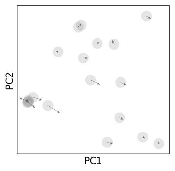
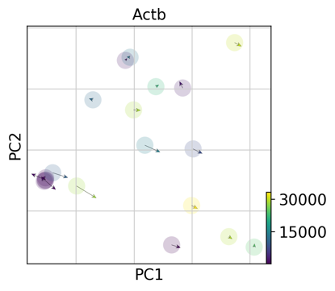
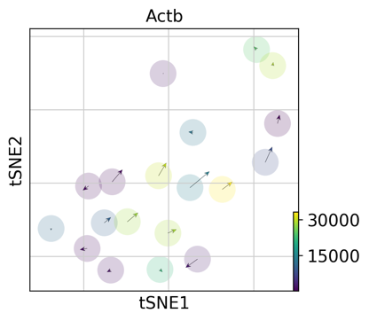

VELOCYTO
Posted by 廣瀬 in Tech_archive
Velocyto とは、RNAseq の結果に含まれるイントロンの割合からその細胞の分化指向性を算出するという解析手法です。
RNAseq でイントロン??
RNAseq においては totalRNA のうち 99%ともいわれる rRNA を除き mRNA のみを効率よくSequence する目的で、Poly(A)で成熟 mRNA を濃縮することがしばしば行われています。しかし、そのようなサンプルにおいても、実際の Sequence 結果ではイントロンにあたる配列が読まれてくることが指摘されており、この原因は Poly(A)類似モチーフの存在であると推察されています。
結果の例
概日時間の検討ではとてもきれいな結果が得られています。関連遺伝子のunspliced(u) とspliced(s)を観察していくと、circadian timeの経過とともにu がs に変化していきます。
また、未分化細胞からの分化の方向性を見積もることも可能と報告されています。マウスのオリゴデンドロサイト前駆体細胞がオリゴデンドロサイトへ分化する方向に Velocityを持っていることが示されました。
実践編
Developer の WEB(http://velocyto.org/)の tutorial を参考に手持ちの BAM で挑戦します。R 用と Python 用とあるようですが、もちろん Python です。二部構成となっており、前半はCommand lineでBAMファイルから.loomファイルを作成、後半では作成した.loomファイルから解析を行うとのことです。
準備
$ conda install numpy scipy cython numba matplotlib scikit-learn h5py click
$ pip install velocyto
$ pip install scanpy
$ pip install -U scvelo
※pysam は Windows 環境下では仮想環境下であってもインストールできないそうです。 - https://qiita.com/chaoi/items/6d7702cd70430610f844
これに気付かず数日はまりました。。
Genome annotation file のダウンロード
GENCODE のサイトから GTF ファイルをダウンロードし、適当な場所に保存して gunzip。
実行
Sequence の手法ごとに Command を選べます。今回は smart-seq2 で行います。
$ velocyto run-smartseq2 -e hogehoge /*.bam annotation.gtf
オプション
-o, --outputfolder：出力ディレクトリを作成・指定-e, --sampleid：出力ファイル名-m, --repmask：リピート配列をマスクする場合-t, --dtype：出力ファイルのデータ型(default は unit32)-d, --dump-v, --verbose
サンプルごとに BAM があることを想定して複数ファイルを*で受け付けてくれます。BAM と GTF ファイルは必須です。なお、BAM の代わりに SAM を入れてもエラーは吐かないようです。これにより、hogehoge.loom ファイルが得られました。この中には、各分子のスプライシング状態が格納されています。
※TOPHAT でアラインメントしたデータはそのままではうまく行かないようです。なので、TopHat-Recondition で unmap のデータを拾ってくればいけるかもしれません。今回はHISAT2 でアラインメントし直してから velocyto をかけ、改めてhogehoge.loom ファイルを得ました。
描画
Scanpy と組み合わせて使用するために scvelo を用いました。
import scanpy as sc
import scvelo as scv
データ読み込み
adata = sc.read("hogehoge.loom", cache=True)
次元圧縮
sc.tl.pca(adata, n_comps=10)
速度計算
scv.pp.moments(adata)
scv.tl.velocity(adata)
描画
scv.pl.velocity_embedding(adata)

※それぞれの細胞における特定遺伝子の発現レベルを色で表したり、PCA 以外の次元圧縮法を用いることもできます。この場合は tSNE のほうがきれいに見えるようです。パラメータはたくさん用意されているので、各データセットで最適な条件を検討する必要があるでしょう。
 